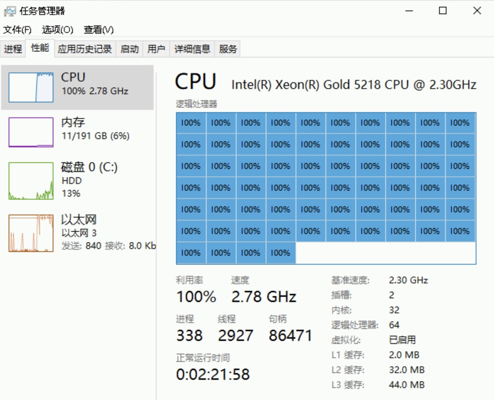

不要高兴得太早
void jyy() { // 最低优先级
mutex_lock(&wc_lock);
// 先到先得
}
void xi_zhu_ren() { // 中优先级
while (1) ;
}
void xiao_zhang() { // 高优先级
sleep(1);
mutex_lock(&wc_lock);
...
}
jyy 在持有互斥锁的时候被赶下了处理器……
这个故事在火星上发生过一次

The First Bug on Mars

Sojourner “探路者” (PathFinder)
- Lander (登陆舱)
- IBM Rad6000 SC (20 MIPS), 128 MiB RAM, 6 MiB EEPROM
- VxWorks “实时” 任务操作系统
- ASI/MET task: 大气成分监测 (低)
bc_disttask: 分发任务 (中)bc_schedtask: 总线调度 (高)
- Rover (火星车)
- Intel 80C85 (0.1 MIPS), 512K RAM, 176K Flash SSD
- 着陆后开始出现系统重启
The First Bug on Mars (cont'd)

- (低优先级)
select -> pipeIoctl -> selNodeAdd -> mutex_lock - (高优先级)
pipeWrite -> mutex_lock
解决优先级反转问题
Linux: 解决不了，CFS 凑合用吧
实时系统：火星车在 CPU Reset，不能摆烂啊
- 优先级继承 (Priority Inheritance)/优先级提升 (Priority Ceiling)
- 持有 mutex 的线程/进程会继承 block 在该 mutex 上进程的最高优先级
- 但也不是万能的 (例如条件变量唤醒)
- 在系统中动态维护资源依赖关系
- 优先级继承是它的特例
- 似乎更困难了……
- 避免高/低优先级的任务争抢资源
- 对潜在的优先级反转进行预警 (lockdep)
- TX-based: 冲突的 TX 发生时，总是低优先级的 abort
还没完：多处理器调度
还没完：我们的计算机系统可是多核心、多线程的！
- 上周的小学生竞赛：租半小时阿里云 bare-metal 搞定评测

多处理器调度：被低估的复杂性
“And you have to realize that there are not very many things that have aged as well as the scheduler. Which is just another proof that scheduling is easy.” ——Linus Torvalds, 2001
Linus 以为调度是个挺简单的问题？
- As a central part of resource management, the OS thread scheduler must maintain the following, simple, invariant: make sure that ready threads are scheduled on available cores... this invariant is often broken in Linux. Cores may stay idle for seconds while ready threads are waiting in runqueues.
- The Linux scheduler: A decade of wasted cores. (EuroSys'16)
- 作者在狂黑 Linus 😂
- The Linux scheduler: A decade of wasted cores. (EuroSys'16)
多处理器调度的困难所在
既不能简单地 “分配线程到处理器”
- 线程退出，瞬间处理器开始围观
也不能简单地 “谁空丢给谁”
- 在处理器之间迁移会导致 cache/TLB 全都白给
多处理器调度的两难境地
- 迁移？可能过一会儿还得移回来
- 不迁移？造成处理器的浪费
实际情况 (1): 多用户、多任务
组里有一台 64-core 的服务器
- 马上要到 paper deadline 了，A 和 B 要在服务器上跑实验
- A 要跑一个任务，调用一个库，只能单线程跑
- B 跑并行的任务，创建 10,000 个线程跑
- B 获得几乎 100% 的 CPU
更糟糕的是，优先级解决不了这个问题……
- B 不能随便提高自己进程的优先级
- “An unprivileged user can only increase the nice value and such changes are irreversible...”
Linux Namespaces Control Groups (cgroups)
namespaces (7), cgroups (7)
- 轻量级虚拟化，创造 “操作系统中的操作系统”
- Mount, pid, network, IPC, user, cgroup namespace, time
- cgroup 允许以进程组为单位管理资源
- Docker 就变得很容易实现了

实际情况 (2): Big.LITTLE/能效比

Snapdragon 888
- 1X Prime Cortex-X1 (2.84GHz)
- 3X Performance Cortex-A78 (2.4GHz)
- 4X Efficiency Cortex-A55 (1.8GHz)
- 这比 P/E Cores 还要夸张 😂
“Dark silicon” 时代的困境
- 功率无法支撑所有电路同时工作
- 总得有一部分是停下的
- Linux Kernel EAS (Energy Aware Scheduler)
实际情况 (2): Big.LITTLE/能耗 (cont'd)
软件可以配置 CPU 的工作模式
- 开/关/工作频率 (频率越低，能效越好)
- 如何在给定功率下平衡延迟 v.s. 吞吐量？

实际情况 (3): Non-Uniform Memory Access
共享内存只是假象
- L1 Cache 花了巨大的代价才让你感到内存是共享的
- Producer/Consumer 位于同一个/不同 module 性能差距可能很大

程序执行比你想象得复杂
基本的假设可能不再成立
- 例子: more CPU time, more progress
- 我们课堂上的例子就可以 challenge 这一点
- (sum-atomic)
$ time taskset -c 0 ./a.out
$ time taskset -c 0,1 ./a.out
分配了 1/2 的处理器资源，反而速度更快了
- 系统里进程的行为和交互是非常复杂的……
- NUMA 里尤其重要 (当然上面的例子是个 performance bug)
实际情况 (4): CPU Hot-plug
😂😂😂 我讲不下去了
- 实在是太复杂了
- 我不是代码的维护者，并不清楚这些细节
- 把上面都加起来
- 这得考虑多少情况，写多少代码……
- 把上面都加起来
复杂的系统无人可以掌控
- The battle of the schedulers: FreeBSD ULE vs. Linux CFS. (ATC'18)
- 结论：在现实面前，没有绝对的赢家和输家
- 如果你追求极致的性能，就不能全指望一个调度算法